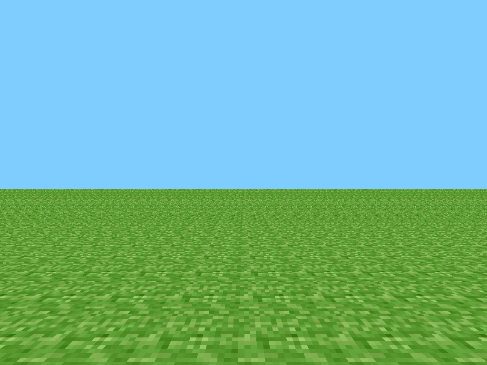
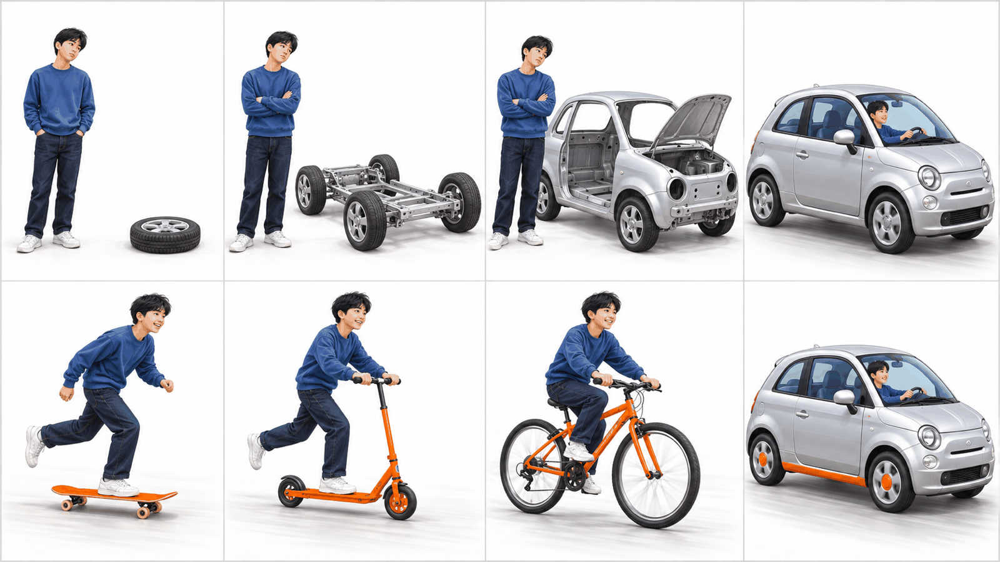

만들기 전에
점검하기动手之前
先检查
그 결과를 내 눈과 손으로 확인합니다.第 10 次课起开始动手做。在那之前，先让 AI 检查自己的 PRD，
再用自己的眼睛和手确认结果。
구상은 있었지만, 기술이 따라오는 데 수십 년이 걸렸다构想早就有了，技术却花了几十年才追上
10회부터는 AI와 진짜 서비스를 만듭니다. 만들기 전에 「이걸 정말 만들 수 있나」를 왜 묻는지 세 이야기로 봅니다. 첫째는 1987년 애플의 영상 「나리지 내비게이터(Knowledge Navigator)」입니다.第 10 次课起要和 AI 一起做真正的服务。动手之前为什么要问“这个真的做得出来吗”，用三个故事来看。第一个是 1987 年苹果的影片《知识领航员（Knowledge Navigator）》。
- 어떤 영상 · 애플 CEO 존 스컬리가 1987년 대학 교육 학회(EDUCOM) 연설에서 「애플이 그리는 미래 컴퓨터」로 보여 준 5분짜리 영상이다.是什么影片 · 苹果 CEO 约翰·斯卡利 1987 年在大学教育会议（EDUCOM）的演讲上，作为“苹果设想的未来电脑”播放的 5 分钟影片。
- 누가 만들었나 · 애플 디자이너 휴 더벌리와 도리스 미치가 짜고, 외부 영상 회사와 6주 만에 만들었다.谁做的 · 苹果的设计师休·达伯利和多丽丝·米奇构思，和外部影像公司用 6 周做成。
- 무엇이 나오나 · 교수가 납작한 화면 기기에 말로 부탁하면 AI 비서가 자료를 찾고 일정을 잡고 영상 전화를 건다.里面有什么 · 教授对着扁平的屏幕设备说话，AI 助手就查资料、排日程、打视频电话。
- 1987년에는 그런 화면도, 배터리도, 말을 알아듣는 AI도 없어서 영상으로만 그렸다.1987 年还没有那样的屏幕、电池和听得懂话的 AI，所以只能拍成影片。
- 영상 속 날짜는 2011년 9월, 실제 Siri는 2011년 10월에 나왔다. 영상처럼 대화하는 AI는 2020년대에야 나왔다.影片里的日期是 2011 年 9 月，真正的 Siri 在 2011 年 10 月推出。像影片里那样能对话的 AI，到 2020 年代才出现。
설계한 약속이 그 기기를 넘었고, 너무 늦게 알았다设计的承诺超出了那台设备，而且发现得太晚 (이어서)（续）
둘째는 반대 경우입니다. 기술은 있었는데, 설계한 약속이 그것을 돌릴 기기의 힘을 넘었습니다. 2020년에 나온 사이버펑크 2077은 몇 년 동안 큰 약속으로 기대를 모았고, 성능이 낮은 예전 콘솔에서도 돌아가게 하겠다고 정했습니다.第二个是相反的情况。技术是有的，可设计的承诺超出了运行它的设备的能力。2020 年推出的《赛博朋克 2077》多年来许下大承诺、备受期待，还决定要在性能较低的旧主机上也能运行。
- 2020년 12월 나오자마자 예전 콘솔(PS4 · Xbox One)에서 버그와 멈춤이 쏟아졌다.2020 年 12 月一发售，在旧主机（PS4 · Xbox One）上就接连出现漏洞和卡死。
- 12월 18일 소니가 PlayStation 스토어에서 내리고 환불해 주었다.12 月 18 日，索尼把它从 PlayStation 商店下架，并给玩家退款。
개발사도 예전 기기에서 잘 돌게 하는 데 더 신경 썼어야 했다며 사과했습니다. 만들 실력이 없었던 것이 아니라, 약속한 것과 그것을 돌릴 기기가 맞지 않았고 그걸 너무 늦게 알았습니다. 이런 어긋남을 만들기 전에 찾아내는 것이 오늘의 점검입니다.开发商也道歉说，本该更用心让它在旧设备上运行好。不是没有做的实力，而是承诺的东西和运行它的设备对不上，而且发现得太晚。在动手之前找出这种错位，就是今天的检查。
작은 핵심 하나부터 되는지 확인했다先确认一个小小的核心能不能行 (이어서)（续）
셋째는 마인크래프트입니다. 2009년 5월, 만들기 시작한 지 일주일 남짓 만에 처음 공개한 버전은 아래 그림이 전부였습니다. 풀 블록으로 된 평평한 땅에서 블록을 놓고 부수는 것이 할 수 있는 일의 거의 전부였습니다.第三个是《我的世界》。2009 年 5 月，开始制作一周多一点就首次公开的版本，就只有下面这张图。在草方块铺成的平地上放方块、拆方块，几乎就是能做的全部。

핵심 하나가 재미있다는 것을 확인한 뒤 하나씩 붙여 지금은 세계에서 가장 많이 팔린 게임 가운데 하나가 되었습니다. 세 이야기 모두 「지금 무엇이 되고, 무엇이 아직 안 되는가」를 아는 것이 갈림길이었습니다.确认一个核心玩法好玩之后，再一样一样往上加，现在成了世界上卖得最多的游戏之一。三个故事的分岔口，都在于知不知道“现在什么能做到、什么还做不到”。
지난주 우리 교실에서도 같은 일이 있었다上周我们教室里也发生过同样的事 (이어서)（续）
8회 수행평가 때 여러분이 AI와 주고받은 대화 기록을 선생님이 모두 읽었습니다. 계획 없이 달리다 막힌 장면도 있었고, 이미 점검을 하고 있던 장면도 있었습니다. 둘 다 오늘 할 일과 이어집니다.第 8 次课实践考核时，大家和 AI 往来的对话记录，老师全部读过了。有没有计划就往前冲、结果卡住的场景，也有已经在做检查的场景。两种都和今天要做的事连在一起。
| 지난주에 있었던 일上周发生的事 | 그래서所以 |
|---|---|
| 목업에 기능을 계속 붙이다가 채팅·프로필 화면이 열리지 않았다. 버튼만 있고 화면은 없었다在模型上不停加功能，结果聊天·个人资料画面打不开了。只有按钮，没有画面 | 붙일수록 연결이 끊긴다加得越多，连接越容易断 |
| 「과감하게 디자인을 바꿔 줘」를 몇 번 하다 수업이 끝났다. PRD 앞부분은 비어 있었다说了好几次“大胆改设计”，课就结束了。PRD 前面几项还是空的 | 무엇을 만들지 정하기 전에 꾸미면 시간만 간다还没定好做什么就先装饰，只会耗时间 |
| 「질문하지 말고 완성해 줘」 → AI가 PRD를 통째로 다시 쓰면서 원하지 않은 기능(여러 기기에서 이어 쓰기)이 들어왔다“别问了，直接帮我完成” → AI 把 PRD 整个重写，加进了不想要的功能（多台设备接着用） | 통째로 맡기면 원하지 않은 범위가 들어온다整个交出去，就会混进不想要的范围 |
| 목업은 게임처럼 움직이는데, 저장하고 이어 하는 기능은 아직 없다模型像游戏一样动起来了，但保存、接着玩的功能还没有 | 뼈대보다 살을 먼저 붙였다先加了肉，还没搭好骨架 |
「근데 내가 사진을 올리지도 않았는데 뭘 인식하고 표를 만든 거야?」는 목업에서 진짜로 되는지를, 「내가 휴대폰으로 지금 이 시스템을 사용할 수 있나?」는 이 환경에서 되는지를 물은 질문입니다. 오늘은 AI에게 이런 질문을 모든 기능에 하게 합니다.“근데 내가 사진을 올리지도 않았는데 뭘 인식하고 표를 만든 거야?”（我都没上传照片，你识别了什么、做出的表？）问的是模型里是不是真的能做到；“내가 휴대폰으로 지금 이 시스템을 사용할 수 있나?”（我现在能用手机用这个系统吗？）问的是在这个环境里能不能做到。今天让 AI 对每个功能都问这样的问题。
스케이트보드부터 만든다先做滑板 (이어서)（续）
자동차를 바퀴부터 만들면 마지막 날까지 탈 것이 없습니다. 스케이트보드부터 만들면 첫날부터 탈 수 있고, 하나씩 바꿔 가며 더 좋은 탈것이 됩니다. 10회에는 내 서비스의 스케이트보드, 곧 핵심 기능 하나부터 만들고 그 뒤에 살을 붙여 갑니다.如果从轮子开始造汽车，直到最后一天都没有能骑的东西。如果从滑板开始，第一天就能骑，再一样一样换，变成更好的交通工具。第 10 次课先做自己服务的“滑板”，也就是一个核心功能，然后再慢慢加肉。

3교시 · 9-1 점검 — 지금 무엇이 있고, 쓸 수 있고, 만들 수 있는가
4교시 · 9-2 점검 결과로 현실적인 목표를 정하고 계획으로 구체화한다第 3 节 · 9-1 检查 — 现在有什么、能不能用、能不能做
第 4 节 · 9-2 用检查结果定下现实的目标，再具体化成计划
점검은 AI가 하고, 확인은 내가 한다检查交给 AI，确认由我来做 핵심核心
3교시에는 AI에게 내 PRD와 목업을 세 가지 관점에서 점검하게 합니다. 점검 결과는 새 파일이 아니라 PRD.md의 해당 항목 바로 아래에 「> [점검]」으로 시작하는 줄로 붙습니다. 내가 쓴 문장은 그대로 남습니다. 4교시에는 이 점검을 보며 현실적인 목표를 정하고, 개발 계획서로 따로 구체화합니다.第 3 节课让 AI 从三个角度检查自己的 PRD 和模型。检查结果不放进新文件，而是以“> [점검]”开头的行，加在 PRD.md 对应项目的正下方。自己写的句子原样保留。第 4 节课看着这些检查定下现实的目标，再另外做成开发计划书，把它具体化。
| 요청请求 | AI가 보는 관점AI 检查的角度 | 붙는 자리加在哪里 | 내가 확인하는 것我要确认的 |
|---|---|---|---|
| ①① | 지금 무엇이 있고, 목업에서 진짜로 되는가现在有什么，模型里是不是真的能用 | 2항 기능 아래第 2 项功能下面 | 목업을 직접 눌러 본다亲手点一点模型 |
| ②② | 처음 쓰는 사람이 막히지 않는가第一次用的人会不会卡住 | 3·4항 아래第 3·4 项下面 | 「내 판단」을 적는다写“내 판단”（我的判断） |
| ③③ | 실제로 만들 수 있는 기술인가在技术上真的做得出来吗 | 2항 기능 아래第 2 项功能下面 | 근거를 읽고 검색해 본다读依据，再搜一搜 |
6~8회에 쓴 06 폴더를 그대로 엽니다. 8회에 낸 PRD 원본은 선생님이 받아 두었으니, PRD에 점검 줄이 붙어도 괜찮습니다.直接打开第 6~8 次课用过的 06 文件夹。第 8 次课交的 PRD 原件老师已经收好了，所以 PRD 里加上检查行也没关系。
목업은 완성품이 아니라 모델하우스다模型不是成品，而是样板房 (이어서)（续）
6-2부터 만든 목업에는 화면도 디자인도 있고, 어떤 것은 버튼을 누르면 움직이기까지 합니다. 그래서 거의 다 만들었다고 느끼기 쉽습니다. 하지만 목업은 아파트를 팔 때 보여 주는 모델하우스와 같습니다. 방과 가구는 진짜처럼 보여도 수도와 전기가 이어져 있지 않아 그 집에서 살 수는 없습니다.从 6-2 起做的模型有画面、有设计，有的按下按钮还会动。所以很容易觉得差不多做完了。但模型就像卖房时给人看的样板房。房间和家具看起来像真的，可水电没有接通，没法在里面生活。
| 목업 · 모델하우스模型 · 样板房 | 10회부터 만들 서비스 · 진짜 집第 10 次课起做的服务 · 真正的房子 | |
|---|---|---|
| 화면画面 | 있다有 | 있다有 |
| 버튼을 누르면按下按钮 | 흉내이거나, 이 브라우저 안에서만 움직인다要么是假装，要么只在这个浏览器里动 | 요청이 서버로 가서 처리된다请求发到服务器去处理 |
| 기록记录 | 새로 고치거나 다른 컴퓨터에서 열면 사라진다刷新或换一台电脑打开就没了 | SQLite에 남아 언제든 다시 본다留在 SQLite 里，随时能再看 |
| 하는 일作用 | 내 생각을 보여 주는 견본展示自己想法的样品 | 사람들이 실제로 쓴다人们真的在用 |
목업은 10회에 그대로 가져가 서비스의 출발점으로 씁니다. 그때 흉내인 부분과 이 브라우저에만 남는 부분을 진짜(서버와 SQLite)로 잇습니다. 그러니 지금 목업에 기능을 더 붙이기보다, 무엇이 진짜이고 무엇이 흉내인지 아는 것이 먼저입니다.模型第 10 次课会原样带过去，当作服务的起点。那时再把假装的部分、只留在这个浏览器里的部分，接成真的（服务器和 SQLite）。所以现在与其再往模型上加功能，不如先弄清哪些是真的、哪些是假装。
06 폴더를 열고 OpenCode를 켠다打开 06 文件夹，启动 OpenCode 실습实践
VS Code에서 파일 → 폴더 열기로 06 폴더 자체를 엽니다. 탐색기 맨 위에 06이 보이고, 그 아래 PRD.md와 mockup 폴더가 있으면 됩니다. 그다음 터미널을 열어 OpenCode를 켭니다.在 VS Code 里用 파일 → 폴더 열기（文件 → 打开文件夹）打开 06 文件夹本身。资源管理器最上面显示 06，下面有 PRD.md 和 mockup 文件夹就对了。然后打开终端，启动 OpenCode。
- 탐색기 맨 위가
06인지,PRD.md와mockup이 보이는지 확인한다.确认资源管理器最上面是06，并且能看到PRD.md和mockup。 - 터미널 → 새 터미널을 열고 줄 끝이
…\06>인지 본다.打开 터미널 → 새 터미널（终端 → 新建终端），看行末是不是…\06>。 opencode를 입력해 켠다.输入opencode启动。
요청문마다 「내가 쓴 PRD 문장은 고치지 마」 「mockup은 고치지 마」가 들어 있습니다. AI가 HTML이나 코드를 보여 주기 시작하면 「코드는 만들지 마. 점검만 해 줘」를 보냅니다.每个请求里都有“不要改我写的 PRD 句子”“不要修改 mockup”。如果 AI 开始给出 HTML 或代码，就发“不要写代码，只做检查”。
지금 무엇이 있고, 목업에서 진짜로 되는가现在有什么，模型里是不是真的能用 핵심核心
첫 점검은 지금 상태입니다. PRD 2항에 적은 기능마다 목업에서 정말 동작하는지 가리게 합니다. 목업에는 예시 값을 미리 넣어 두었거나, 이 브라우저에만 저장되거나, 버튼만 있는 기능이 많습니다. 된 것처럼 보이는 것과 진짜를 먼저 나눠야 계획이 섭니다.第一项检查是现在的状态。让 AI 对 PRD 第 2 项写的每个功能，分辨在模型里是不是真的能运行。模型里有很多功能是预先放了示例值、只存在这个浏览器里、或者只有按钮。先把看起来像做好了的和真的分开，计划才立得住。
PRD.md와 mockup 폴더를 모두 읽고, 「지금 무엇이 있고, 목업에서 진짜로 되는가」라는 관점에서 내 PRD를 점검해 줘. PRD.md 2항의 기능마다 그 줄 바로 아래에 「> [점검 1] …」을 한 줄씩 덧붙여 줘. - 목업에서 진짜 / 이 브라우저에만 / 흉내 / 버튼만 / 목업에 없음 가운데 하나를 고르고, 목업 코드에서 본 근거를 짧게 적어 줘. 예시 값을 미리 넣어 둔 것은 흉내야. - 목업에만 있고 PRD에 없는 기능은 2항 끝에 「> [점검 1] PRD에 없음: ○○」으로 적어 줘. 내가 쓴 PRD 문장은 한 글자도 고치거나 지우지 말고, 「>」로 시작하는 줄만 덧붙여. mockup은 고치지 마.
请把 PRD.md 和 mockup 文件夹全部读一遍，从“现在有什么、模型里是不是真的能用”这个角度检查我的 PRD。 在 PRD.md 第 2 项的每个功能那一行正下方，各加一行“> [점검 1] …”。 - 从 真的 / 只在这个浏览器里 / 假装 / 只有按钮 / 模型里没有 中选一个，并简短写出在模型代码里看到的依据。 预先放了示例值的算假装。 - 只在模型里有、PRD 里没有的功能，在第 2 项末尾写“> [점검 1] PRD 里没有：○○”。 我写的 PRD 句子一个字都不要改、不要删，只加以“>”开头的行。不要修改 mockup。
AI의 판단을 목업에서 직접 눌러 확인한다在模型上亲手点一点，确认 AI 的判断 (이어서)（续）
AI는 목업 코드를 읽고 짐작한 것입니다. 실제로 눌러 봐야 압니다. 먼저 PRD.md를 Ctrl+Shift+V 미리 보기로 열면 점검 줄이 회색 인용 상자로 보입니다. 그중 「진짜」나 「이 브라우저에만」이라고 한 기능 두 개를 목업에서 직접 해 보고 F5로 새로 고쳐 봅니다.AI 是读了模型代码之后推测的。真的点一点才知道。先用 Ctrl+Shift+V 预览打开 PRD.md，检查行会显示成灰色的引用框。从中挑两个写成“真的”或“只在这个浏览器里”的功能，在模型上亲手试一试，再按 F5 刷新。
mockup폴더의index.html을 오른쪽 클릭 → Open with Live Server.右键点mockup文件夹里的index.html→ Open with Live Server。- 고른 기능 두 개를 직접 해 본다.亲手试一试挑出的两个功能。
F5를 누른 뒤에도 방금 넣은 것이 남아 있는지 본다.按F5之后，看刚才输入的东西还在不在。- 점검 줄과 다르면 「○○는 새로 고치면 사라져. 그 [점검 1] 줄을 고쳐 줘」처럼 내가 본 것을 그대로 말한다.和检查行不一样，就像“○○ 一刷新就没了，请改一下那行 [점검 1]”这样，把自己看到的照实说出来。
목업은 이 컴퓨터의 이 브라우저 안에만 기록을 남깁니다(7-1의 오른쪽 칸과 같습니다). 다른 컴퓨터나 다른 브라우저에서는 보이지 않습니다. 10회에 이 기록을 SQLite로 옮깁니다.模型只把记录留在这台电脑的这个浏览器里（和 7-1 右边那一栏一样）。换一台电脑或换一个浏览器就看不到。第 10 次课会把这些记录搬到 SQLite 里。
처음 쓰는 사람이 되어 걸어 본다当作第一次使用的人走一遍 핵심核心
두 번째 점검은 사용하는 사람의 눈입니다. 만든 사람은 어디를 눌러야 하는지 다 알기 때문에 막히는 곳을 못 봅니다. 그래서 AI에게 이 서비스를 처음 쓰는 사람이 되어 PRD 3항의 흐름대로 목업을 따라가 보게 합니다. 점검 줄 끝의 「내 판단」은 비워 두게 합니다.第二项检查用的是使用者的眼光。做的人知道该点哪里，所以看不到会卡住的地方。于是让 AI 当作第一次用这个服务的人，照 PRD 第 3 项的流程走一遍模型。让它把检查行末尾的“내 판단”（我的判断）空着。
이번에는 「이 서비스를 처음 쓰는 사람」의 관점에서 내 PRD를 점검해 줘. mockup의 첫 화면부터 PRD.md 3항의 흐름대로 한 단계씩 따라가 보고, 막히거나 헷갈리는 곳을 PRD.md 3항·4항의 해당 줄 바로 아래에 「> [점검 2] …」로 덧붙여 줘. 아래 다섯 가지는 꼭 살펴봐 줘. - 처음 열었을 때 무엇을 해야 하는지 보이는가 - 핵심 기능까지 몇 번 눌러야 가는가 - 잘못 넣거나 비워 두면 무엇이 보이는가 - 다시 열면 내 기록이 남아 있는가 - 핵심 기능을 가리는 화면이나 기능이 있는가 줄마다 끝에 「내 판단: 」을 비워 둬. 내가 쓴 PRD 문장은 고치거나 지우지 마. mockup은 고치지 마.
这次请从“第一次用这个服务的人”的角度检查我的 PRD。 从 mockup 的第一个画面开始，照 PRD.md 第 3 项的流程一步一步走， 把卡住或让人困惑的地方，用“> [점검 2] …”加在 PRD.md 第 3·4 项对应那一行的正下方。 下面五点一定要看。 - 第一次打开时，看得出要做什么吗 - 要点几次才能到核心功能 - 输错或空着时，会显示什么 - 重新打开，我的记录还在吗 - 有没有挡住核心功能的画面或功能 每行末尾留一个空的“내 판단:”。我写的 PRD 句子不要改、不要删。不要修改 mockup。
점검 줄 끝에 「내 판단」을 적는다在检查行末尾写“我的判断” (이어서)（续）
AI가 붙인 점검 2 줄을 하나씩 읽고, 목업에서 같은 순서로 직접 해 봅니다. 맞으면 「동의」, 다르면 「아님」과 내가 본 것을 한마디로 적습니다. 오늘 내가 직접 쓰는 곳은 여기뿐입니다. 이 판단이 4교시에 현실적인 목표를 정할 때 근거가 됩니다.把 AI 加上的检查 2 行一行一行读，在模型上按同样的顺序亲手做一遍。对的写“同意”，不对的写“不是”，再用一句话写下自己看到的。今天自己动手写的只有这里。这些判断会成为第 4 节课定下现实目标时的依据。
## 3. 대표 사용 흐름 1. 사용자가 서비스를 연다. > [점검 2] 소개 화면 3장을 넘기고 로그인해야 해서 핵심 기능까지 다섯 번 눌러야 한다. > 내 판단: 동의 · 소개는 나중에 보게 해도 된다 2. 단어와 뜻을 넣고 저장한다. > [점검 2] 다시 열면 기록이 남는다(브라우저 저장). > 내 판단: 아님 · 다른 브라우저로 여니 비어 있었다
## 3. 대표 사용 흐름 1. 사용자가 서비스를 연다. > [점검 2] 要翻过 3 张介绍画面再登录，到核心功能要点五次。 > 내 판단: 同意 · 介绍可以以后再看 2. 단어와 뜻을 넣고 저장한다. > [점검 2] 重新打开记录还在（存在浏览器里）。 > 내 판단: 不是 · 用别的浏览器打开是空的
점검 줄이 무슨 뜻인지 모르겠으면 「이 [점검 2] 줄을 쉬운 말로 다시 설명해 줘. 어느 화면의 어떤 버튼이야?」를 보냅니다. 내가 이해한 뒤에 동의할지 정합니다.看不懂检查行是什么意思，就发“请用简单的话重新解释这行 [점검 2]。是哪个画面的哪个按钮？”。自己理解之后再决定同不同意。
실제로 만들 수 있는 기술인지는 세 가지로 본다技术上能不能做出来，分三种来看 핵심核心
마지막 점검은 「이 기능을 실제로 만들 수 있는 기술이 지금 세상에 있는가」입니다. 웹 서비스라서, 이 PC라서, 이 수업이라서 안 되는 것은 기술의 한계가 아닙니다. 그건 4교시에 따로 봅니다. 3교시에는 기술만 봅니다.最后一项检查是“现在世界上有没有能真的做出这个功能的技术”。因为是网页服务、因为是这台电脑、因为是这门课而做不了的，不是技术的极限。那个第 4 节课另外看。第 3 节课只看技术。
| 판정判定 | 뜻意思 | 예例 |
|---|---|---|
| 지금 기술로 만들 수 있다现在的技术就能做 | 이미 그 일을 하는 제품이나 도구가 흔하다已经有很多做这件事的产品或工具 | 일정·기록 저장과 다시 보기 · 타이머 · 퀴즈 · 3D 게임 · 사진 속 글자 읽기保存并再次查看日程·记录 · 计时器 · 测验 · 3D 游戏 · 读照片里的文字 |
| 조건이 갖춰지면 가능하다条件齐了就能做 | 기술은 있지만 따로 필요한 것이 있다技术是有的，但另外需要一些东西 | AI가 대답하기 → AI 서비스 계정 · 여러 기기에서 이어 쓰기 → 서버 · 휴대폰 위젯 → 앱 개발让 AI 回答 → AI 服务账号 · 多台设备接着用 → 服务器 · 手机小组件 → 开发 App |
| 지금 기술로도 어렵다以现在的技术也很难 | 전문가도 아직 초안 수준까지만 된다专家也只能做到草稿水平 | 커버 영상을 듣고 타브 악보를 자동으로 쓰기 — 음 높이는 뽑지만 어느 줄 몇 프렛인지와 주법은 사람이 고친다听翻弹视频自动写吉他六线谱 — 音高能提取，但哪根弦第几品、弹奏技巧还要靠人改 |
나리지 내비게이터의 AI 비서도 1987년에는 「지금 기술로도 어렵다」였습니다. 판정은 지금 기술이 어디까지 왔는지를 아는 일이지, 꿈을 지우는 일이 아닙니다.《知识领航员》里的 AI 助手，在 1987 年也是“以现在的技术也很难”。判定是为了知道现在的技术走到了哪一步，不是为了抹掉梦想。
실제로 만들 수 있는 기술인가在技术上真的做得出来吗 핵심核心
점검 1·2를 거치면 핵심 기능과 걱정되는 기능이 보입니다. 모든 기능을 다 보지 않고 네 개까지만 깊게 보게 합니다. 수업 조건은 넣지 않고 기술만 묻습니다. AI가 「됩니다」라고만 하지 않게, 그 일을 실제로 하는 제품이나 기술 이름을 근거로 대게 하고, 이 서비스에 잘 맞는 틀(프레임워크·도구)도 함께 묻습니다.做完检查 1·2，核心功能和让人担心的功能就看出来了。不看全部功能，只让它最多挑四个深入看。不放课堂条件，只问技术。为了不让 AI 只说“能做到”，要它拿真正在做这件事的产品或技术名称当依据，还要一起问适合这个服务的框架或工具。
PRD.md의 [점검 1]·[점검 2]를 다시 읽고, 「지금 세상의 기술로 이 기능을 실제로 만들 수 있는가」라는 관점에서 점검해 줘. 이 수업의 조건이나 웹 서비스인지는 생각하지 말고, 기술로 되는지만 봐 줘. 핵심 기능 하나와 걱정되는 기능을 모두 4개까지 골라, PRD.md 2항의 그 기능 아래에 「> [점검 3] 판정 · 근거」를 덧붙여 줘. 판정은 지금 기술로 만들 수 있다 / 조건이 갖춰지면 가능하다 / 지금 기술로도 어렵다 가운데 하나야. - 조건이 갖춰지면 가능하다면, 무엇이 필요한지 적어 줘. - 지금 기술로도 어렵다면, 어디까지는 되고 무엇이 아직 안 되는지 적어 줘. 근거에는 그 일을 실제로 하는 제품이나 기술 이름을 적고, 모르면 모른다고 적어 줘. 마지막으로 2항 끝에 「> [점검 3] 맞는 틀: ○○ — 이유」로, 이 서비스를 만들기에 잘 맞는 프레임워크나 도구를 두세 개 적어 줘. 내가 쓴 PRD 문장은 고치거나 지우지 마. mockup은 고치지 마.
请重新读 PRD.md 的 [점검 1]·[점검 2]，从“以现在世界上的技术，这个功能真的做得出来吗”的角度检查。 不要考虑这门课的条件，也不要管是不是网页服务，只看技术上行不行。 挑出一个核心功能和让人担心的功能，一共最多 4 个，在 PRD.md 第 2 项那个功能下面加上“> [점검 3] 判定 · 依据”。 判定从 지금 기술로 만들 수 있다 / 조건이 갖춰지면 가능하다 / 지금 기술로도 어렵다 里选一个。 - 如果是条件齐了就能做，请写出需要什么。 - 如果是以现在的技术也很难，请写出哪些能做到、哪些还做不到。 依据里写上真正在做这件事的产品或技术名称；不知道就写不知道。 最后在第 2 项末尾，用“> [점검 3] 合适的框架：○○ — 理由”写两三个适合做这个服务的框架或工具。 我写的 PRD 句子不要改、不要删。不要修改 mockup。
판정의 근거가 말이 되는지 확인한다确认判定的依据说不说得通 (이어서)（续）
AI는 근거 없이 「됩니다」라고 쉽게 말합니다. 그래서 판정보다 근거를 먼저 읽습니다. 서비스나 기술 이름이 적혀 있으면 그중 하나를 검색해 정말 있는지 봅니다. 이름이 없거나 「가능합니다」만 있으면 다시 묻습니다. 「맞는 틀」에 나온 이름들은 10회에 다시 봅니다.AI 很容易不给依据就说“能做到”。所以要先读依据，再看判定。写了服务或技术名称的，就挑一个搜一搜，看是不是真的存在。没有名称、只写着“可以”的，就再问一遍。“合适的框架”里出现的名字，第 10 次课会再看。
___ 기능의 판정 근거를 다시 알려 줘. 그 일을 실제로 하는 서비스나 기술 이름은 뭐야? 거기서도 어느 정도까지 되는지, 가장 어려운 부분이 뭔지 쉬운 말로 적어 줘. 모르면 모른다고 해 줘.
请重新告诉我 ___ 功能的判定依据。 真正在做这件事的服务或技术叫什么？那里能做到什么程度、 最难的部分是什么，请用简单的话写出来。不知道就说不知道。
| 기능 (예)功能（例） | 판정判定 | 근거依据 |
|---|---|---|
| 커버 영상을 듣고 타브 악보를 자동으로 쓰기听翻弹视频自动写吉他六线谱 | 지금 기술로도 어렵다以现在的技术也很难 | 음 높이는 공개 모델로 어느 정도 뽑지만, 같은 음을 어느 줄 몇 프렛에서 칠지와 벤딩 같은 주법은 전문 서비스도 사람이 고친다音高用公开模型能提取到一定程度，但同一个音在哪根弦第几品弹、推弦这类技巧，连专业服务也要靠人来改 |
「지금 기술로도 어렵다」는 좋은 문제를 골랐다는 뜻이기도 합니다. 실제 서비스들도 AI가 초안을 내고 사람이 고치는 방식으로 이 문제를 피합니다. 어떻게 바꿀지는 4교시 9-2에서 정합니다.“以现在的技术也很难”也说明你挑了个好问题。真实的服务也是用“AI 出草稿、人来修改”的方式绕开这个问题。怎么调整，在第 4 节课的 9-2 决定。
PRD 항목마다 점검이 붙었다PRD 的每一项下面都有了检查
3교시에는 AI에게 내 PRD를 지금 상태 · 처음 쓰는 사람 · 만들 수 있나의 세 관점에서 점검하게 하고, 목업을 직접 눌러 보며 맞는지 확인했습니다. PRD.md를 저장하고 미리 보기로 [점검 1·2·3] 줄이 있는지, 내가 쓴 문장이 그대로인지 봅니다.第 3 节课让 AI 从现在的状态 · 第一次使用的人 · 能不能做三个角度检查自己的 PRD，又亲手点了模型确认对不对。保存 PRD.md，用预览看是不是有 [점검 1·2·3] 行，自己写的句子是不是原样还在。
- 만들기 전에 점검한다 — 지금 무엇이 있고, 쓸 수 있고, 만들 수 있는가.动手之前先检查 — 现在有什么、能不能用、能不能做。
- 점검은 AI가 하고, 나는 목업을 직접 눌러 맞는지 확인한다.检查交给 AI，我亲手点一点模型来确认对不对。
- 목업은 모델하우스다 — 된 것처럼 보여도 흉내이거나 이 브라우저에만 남는 것이 있다.模型是样板房 — 看起来做好了的，也可能是假装，或只留在这个浏览器里。
- 점검 3은 기술만 본다 — 수업이라서 안 되는 것은 4교시에 따로 정한다.检查 3 只看技术 — 因为是这门课而做不了的，第 4 节课另外决定。
4교시에는 바로 이어서 이 점검과 수업 조건(이 PC 한 대 · 기록은 SQLite 등)을 함께 놓고 현실적인 목표를 정한 뒤, 메인 기능부터 계획으로 구체화합니다. 계획은 OpenCode의 plan 모드에서 세우고, 계획서는 새 파일로 따로 만듭니다. 같은 OpenCode 창을 그대로 써도 됩니다.第 4 节课接着把这些检查和课堂条件（这一台电脑 · 记录存在 SQLite 等）放在一起，定下现实的目标，再从主要功能开始具体化成计划。计划在 OpenCode 的 plan 模式里制订，计划书另外做成一个新文件。可以接着用同一个 OpenCode 窗口。
9-2. 현실적인 목표와 구체화 →9-2. 现实的目标与具体化 →이럴 때는 이렇게 한다遇到这些情况就这样做 필요할 때需要时
AI와 여러 번 주고받다 보면 막히는 자리가 비슷하게 나옵니다. 내 상황과 같은 줄을 찾아 오른쪽대로 해 봅니다. 그래도 안 되면 손을 듭니다. 시간이 모자라면 점검 3을 먼저 끝냅니다. 4교시에 현실적인 목표를 정할 때 가장 많이 쓰는 줄입니다.和 AI 来回多次，卡住的地方大多相似。找到和自己情况一样的那行，照右边做。还不行就举手。时间不够的话，先做完检查 3。第 4 节课定下现实目标时用得最多的就是这些行。
탐색기에 PRD.md나 mockup이 없다资源管理器里没有 PRD.md 或 mockup | 06 폴더 자체를 열었는지 봅니다. 폴더 이름을 바꿨거나 한 겹 안에 있으면 손을 듭니다. 선생님이 8회 제출본과 대 봅니다.看是不是打开了 06 文件夹本身。如果改过文件夹名，或者它在另一层文件夹里面，就举手。老师会和第 8 次课的提交版本对照。 |
| AI가 내 PRD 문장을 고치거나 지웠다AI 改了或删了我写的 PRD 句子 | 「방금 바꾼 내 PRD 문장을 모두 원래대로 되돌리고, 「>」로 시작하는 점검 줄만 남겨 줘」를 보냅니다. 되돌아오지 않으면 손을 듭니다.发“把刚才改过的我的 PRD 句子全部改回原样，只留下以“>”开头的检查行”。改不回来就举手。 |
| 점검이 대화창에만 나오고 PRD에는 없다检查只出现在对话框，PRD 里没有 | 「대화창에 보여 주지 말고 PRD.md의 해당 항목 아래에 「>」 줄로 저장해」를 보냅니다.发“不要显示在对话框，用“>”行保存在 PRD.md 对应项目下面”。 |
AI가 mockup을 고쳤다AI 改了 mockup | 「방금 mockup에서 고친 곳을 모두 원래대로 되돌려 줘」를 보냅니다.发“把刚才在 mockup 里改的地方全部改回原样”。 |
| Live Server로 열어도 목업이 안 보인다用 Live Server 打开也看不到模型 | 06 폴더가 아니라 mockup 안의 index.html을 오른쪽 클릭했는지 봅니다. 파일 목록만 보이면 그 목록에서 mockup을 누릅니다.看是不是右键点了 mockup 里的 index.html，而不是 06 文件夹。只显示文件列表的话，就在列表里点 mockup。 |
FreeUsageLimitError나 429가 나온다出现 FreeUsageLimitError 或 429 | 1~2분 기다렸다가 같은 요청을 다시 보냅니다. 그동안 점검 2의 「내 판단」을 씁니다.等 1~2 分钟再发同样的请求。这段时间先写检查 2 的“내 판단”。 |